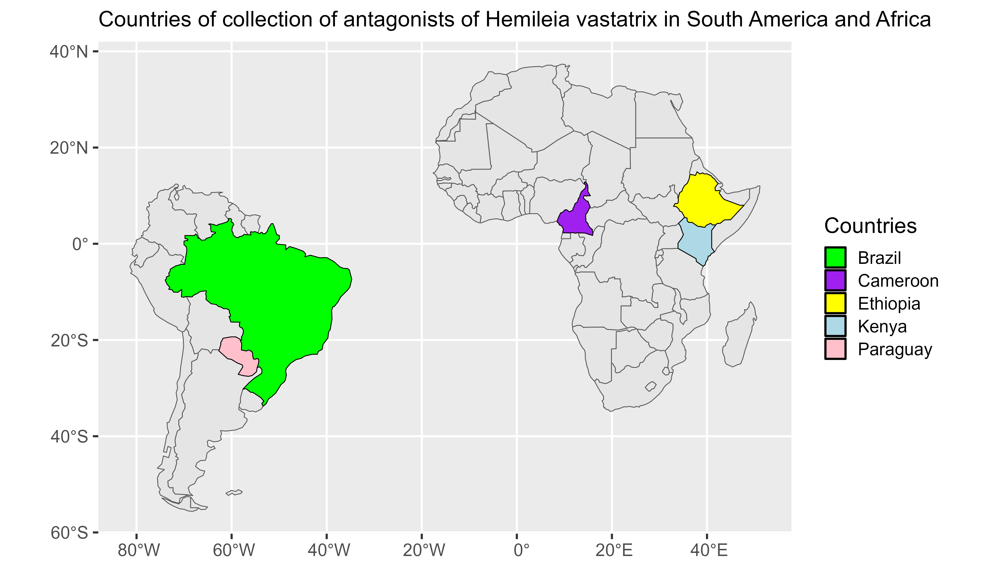
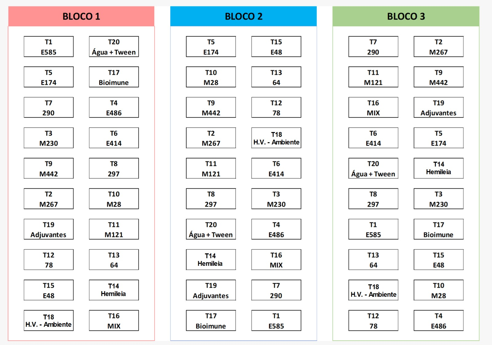
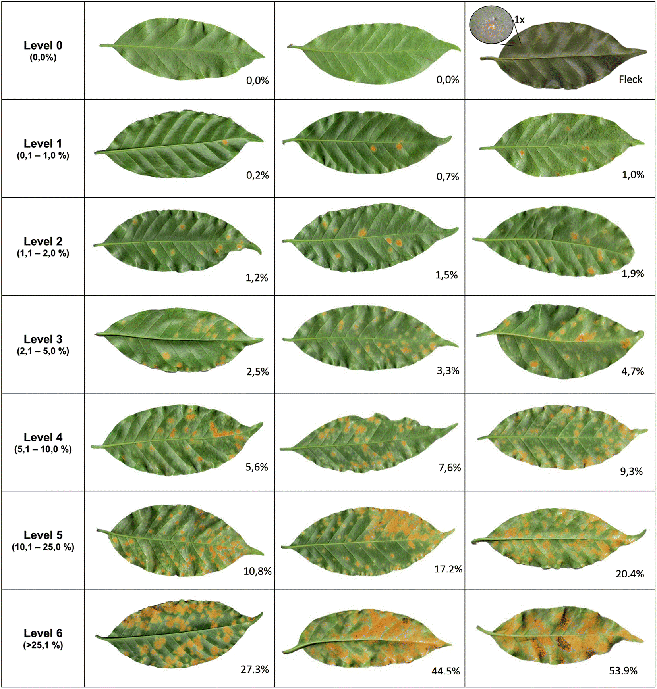

Desde 2015, um estudo financiado pelo World Coffee Research (WCR), envolvendo levantamento de fungos potencialmente antagonistas de Hemileia vastatrix na América do Sul (Brasil e Paraguai) e África (Camarões, Etiópia e Quênia), resultou numa coleção de mais de 1.500 isolados fúngicos. Esta coleção de isolados inclui uma grande diversidade de fungos endofíticos obtidos do cafeeiro e de fungos observados crescendo sobre urédias de H. vastatrix.

Até o presente ano, diversos experimentos em laboratório (em disco de folha e testes em lâmina) e casa de vegetação foram realizados com alguns dos grupos de isolados obtidos, concentrando-se nos gêneros Clonostachys, Aspergillus, Trichoderma, Fusarium, Calonectria, Cordyceps e Alternaria, objetivando avaliar o potencial de biocontrole contra a ferrugem do café. Após a seleção dos melhores isolados nos testes preliminares, resolveu-se testar os 14 isolados selecionados em plantas de café sob condições de campo para realizar um novo screening. O experimento foi organizado seguindo um delineamento em blocos casualizados (DBC), composto por 20 tratamentos, sendo: 14 antagonistas + controle (BI) + testemunha (Hemileia inoculada - HI) + tratamentos adicionais. Para isso, foram formados 3 blocos, cada um contendo 100 plantas, totalizando 300 plantas. Dentro de cada bloco, cada tratamento foi aplicado em 5 plantas. As plantas de café foram mantidas em vasos para utilização no experimento.
Imagem do desenho experimental: 
Como mencionado acima, além dos 14 isolados fúngicos antagonistas, 3 outros tratamentos foram implementados no experimento, sendo eles: um mix/mistura dos isolados (Mix), adjuvante (ADJ) e água mais tween (AT). O tratamento Mix foi incorporado no experimento para analisar se uma mistura dos isolados seria mais eficiente do que cada um sozinho, já os tratamentos ADJ e AT foram inseridos como contraprova. Como estes surfactantes foram utilizados no preparo das suspensões de inóculo, os tratamentos foram aplicados para assegurar e comprovar que o provável efeito de biocontrole estaria sendo realizado pelo isolado antagonista. Tratando-se dos fungos, tanto os isolados antagonistas quanto de H. vastatrix, foi aplicada uma solução de conídios calibrada a 1x10^8 esporos/mL até o escorrimento na planta.
O experimento visava a seleção dos melhores isolados no controle da ferrugem do café. As variáveis analisadas foram a severidade, incidência da doença e a altura das plantas. A avaliação de severidade foi feita 4 vezes (aos 30, 45, 60 e 75 dias após a inoculação), baseada em uma escala diagramática para a ferrugem do café desenvolvida por Figueiredo et al. (2022). Foram avaliadas 6 folhas por planta, sendo duas folhas localizadas no terço inferior, duas no terço médio e duas no terço superior da planta. As folhas avaliadas foram demarcadas como forma de garantir que sempre as mesmas folhas fossem avaliadas. As variáveis incidência e altura de planta foram avaliadas ao final do experimento.
Escala diagramática utilizada na avaliação da severidade da ferrugem do café: 